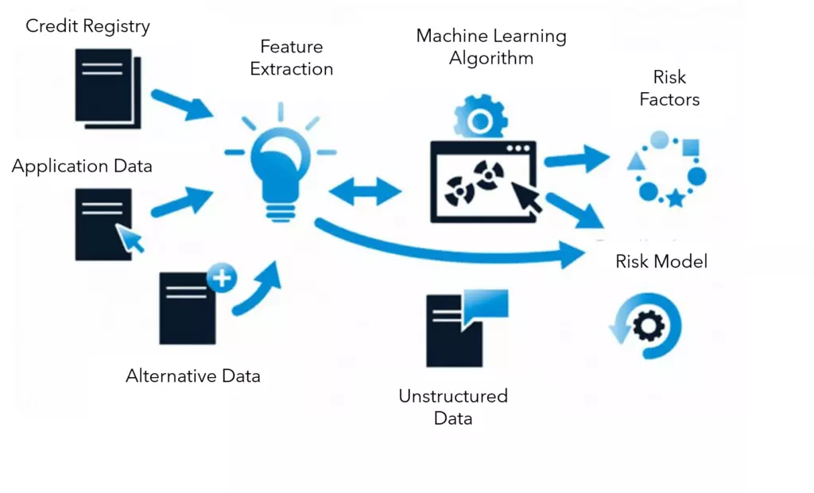

April 25, 2022
Financial inclusion has expanded access to banking services. The main function of banks is to lend money to borrowers using money saved by depositors.
In deciding who to lend to, banks need to assess these borrowers based on traits and historical performance of their previous borrowings. This type of assessment is captured in the C's of credit.
.


RFM is a synonym for recency, frequency, and monetary value. It is important for businesses to understand the value of each client to the business and the potential income they can generate. There are many metrics to measure these interests. One technique that has gained popularity is RFM. The RFM analysis helps firms reasonably predict which of its clients are likely to purchase their products again, how much revenue comes from new (versus repeat) clients, and how to turn occasional buyers into habitual ones.

The objective of this model was to predict income of citizens using factors such as education, age, marital status, occupation, sex, native country, and occupation.

When forecasting, the forecast method used has a great impact on the output. The group also realized the structure of the dataset also influences the forecast method choosen.
The financial sector will benefit from computer vision services as much as others. The main applications include:
fraud prevention based on irrefutable identity verification, like iris scanning
substantial cost savings in retail due to a lower headcount
faster and more accurate processing of insurance claims
innovative ways of identifying investment opportunities
more comfortable and safer means of accessing bank accounts without the need for a card
the ability to detect fakes and warn the seller or the buyer.